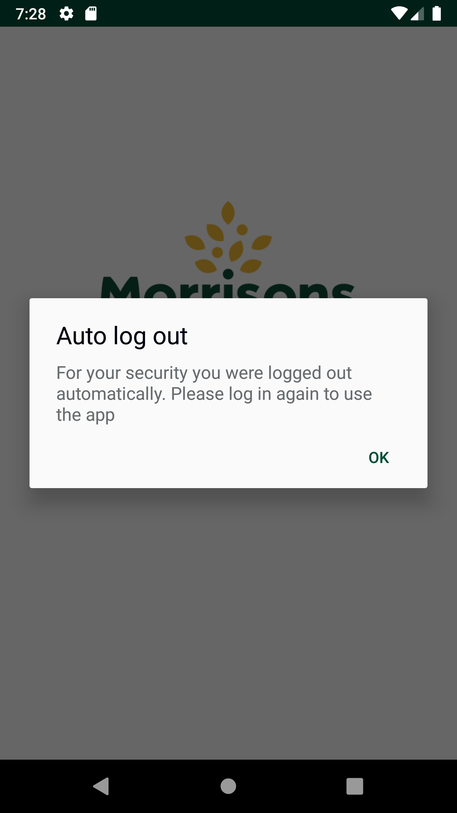
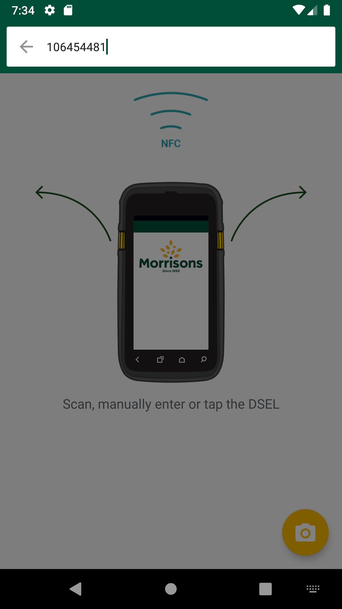
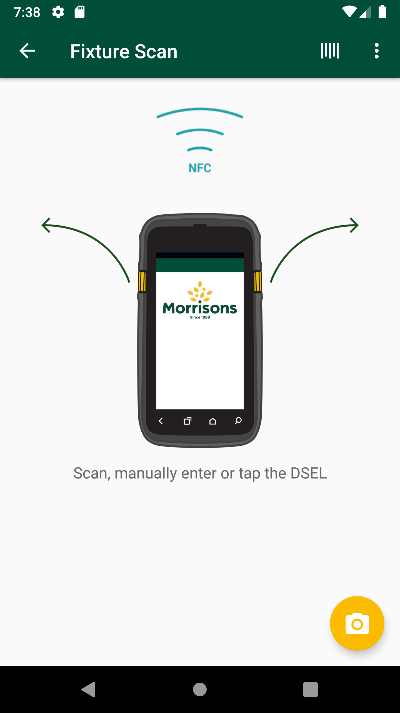
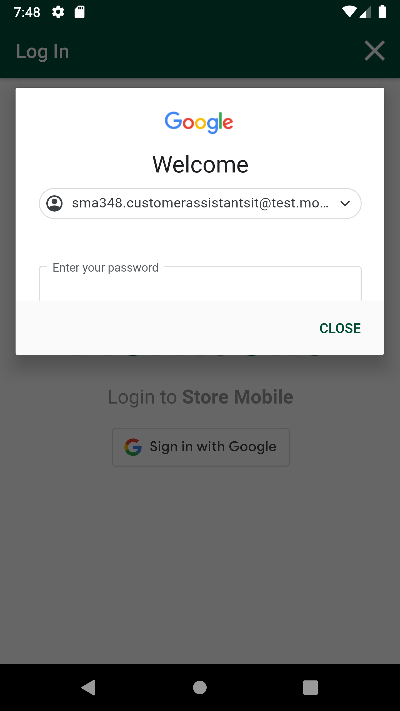
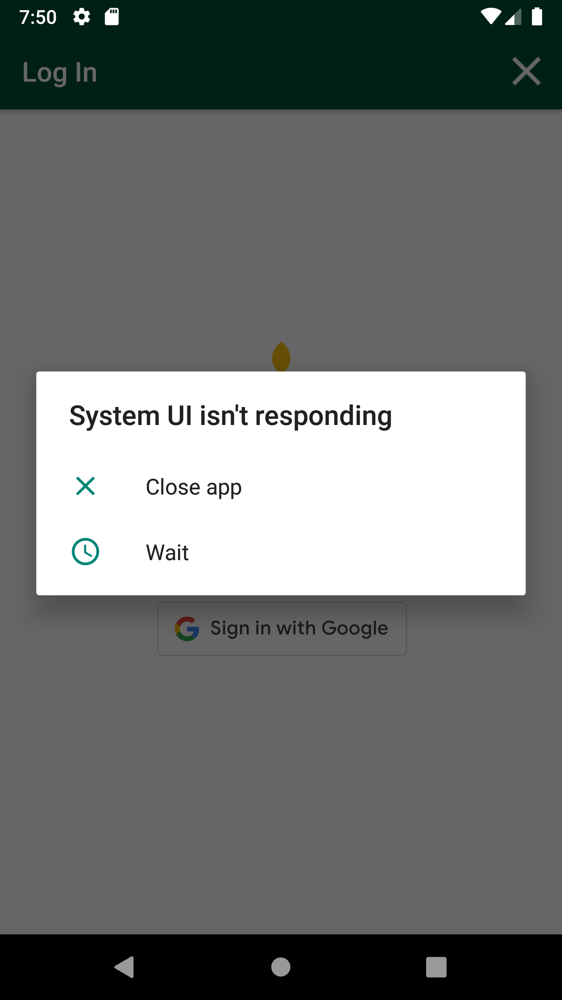
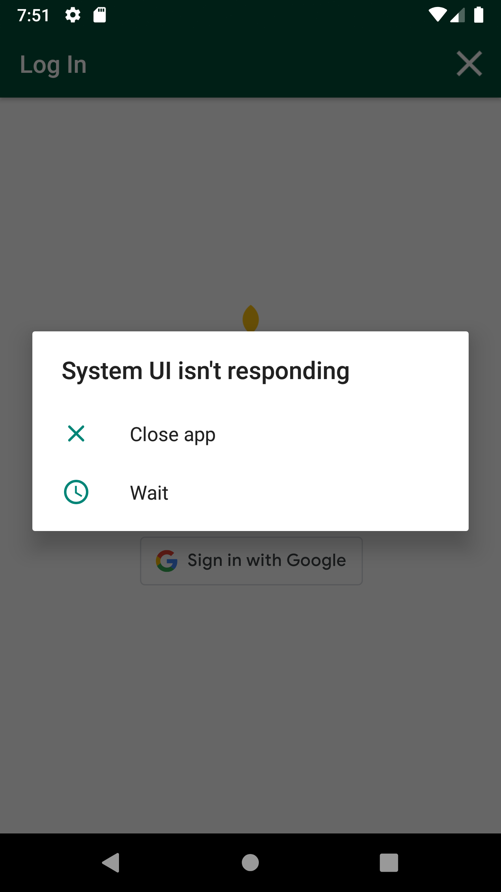

-
Verify Glh Drilldown scenario functionality
2:57:40 PM / 00:54:02:107 Fail
Verify Glh Drilldown scenario functionality
04.05.2024 2:57:40 PM 04.05.2024 3:51:42 PM 00:54:02:107 · #test-id=1@g60Newglh_drill_downPassTO CHANGE THE DEVICE TIMINGS AS REQUIREDPassTO CHANGE THE DEVICE TIMINGS AS REQUIREDGiven I send the time "07" and mins "00" and meridiem "am" and current date in listThen I Change timeThen I Change datePassDelete GLH Storewalk from ServicePassDelete GLH Storewalk from ServiceGiven request is made to capture access token and post endpoint for user v2 for "" Then I Verify the Response Code for the following "- " is 200
And I get the field value for the field "access_token"And Get the generated Access Tocken for SMA app Login ServiceGiven Get request is made to Get storewalks service for current dateAnd Get Operation perform on service requestThen Verify Get storewalks service response for current dateThen Delete request is made to Delete GLH storewalk for store id "8"PassDelete MS GLH Storewalk from ServicePassDelete MS GLH Storewalk from ServiceAnd Get the generated Access Tocken for SMA app Login ServiceGiven Get request is made to Get storewalks service for current dateAnd Get Operation perform on service requestThen Verify Get storewalks service response for current dateThen Delete request is made to Delete MarketStreet storewalk for store id "8"PassGet department list from GLH Summari API responsePassGet department list from GLH Summari API responseAnd Get the generated Access Tocken for SMA app Login ServiceGiven Post request is made to Create storewalk service for store id "8" and type "MarketStreetGapsHighsLows"And Post Operation perform on service requestThen Verify Create storewalk service responseAnd Get request is made to GlhSummary api for Store id "8" and Walktype "MarketStreetGapsHighsLows"Then Get Operation perform on Glh Summary service requestAnd Get Department list from Glh Summary service response for Store id "8"PassVerify that sections for non market street departments which have 0 counts are sorted in alphabetical orderPassVerify that sections for non market street departments which have 0 counts are sorted in alphabetical orderWhen I enter Username and Password for SMA Collegue userAnd I click on login button for SMAThen I click on 'stockMngmtText' on page 'HomePagePO_New'Then I click on "Shop Floor - Gap Scan"Then I click on SummaryAnd I verify Gaps, Count tabs are displayed on summary pageThen I click on Gaps tab on summary pageAnd I verify department list is displayed on summary pageGiven Capture type is "Gaps" and count "0"Then I verify all "Grocery" Department sections count is ZeroAnd I verify department sections which have 0 counts are sorted in alphabetical orderPassVerify that sections for market street department will display specified list of market street departments which are mapped to MarketStrreetGapsHighsLows walktypePassVerify that sections for market street department will display specified list of market street departments which are mapped to MarketStrreetGapsHighsLows walktypeWhen I enter Username and Password for SMA Collegue userAnd I click on login button for SMAThen I click on 'stockMngmtText' on page 'HomePagePO_New'Then I click on "Shop Floor - Gap Scan"And Get the generated Access Tocken for SMA app Login ServiceGiven Get request is made to Get storewalks service for current dateAnd Get Operation perform on service requestThen Verify Get storewalks service response for current dateThen Delete request is made to Delete MarketStreet storewalk for store id "8"Then I click on SummaryAnd I verify Gaps, Count tabs are displayed on summary pageAnd I verify department list is displayed on summary pageAnd I verify Gaps tab, SR, SF and IC columns are displayed on summary page HeaderGiven Capture type is "Gaps" and count "0"Then I get all "Market Street" Department sections in listAnd Get the generated Access Tocken for SMA app Login ServiceGiven Post request is made to Create storewalk service for store id "8" and type "MarketStreetGapsHighsLows"And Post Operation perform on service requestThen Verify Create storewalk service responseAnd Get request is made to GlhSummary api for Store id "8" and Walktype "MarketStreetGapsHighsLows"Then Get Operation perform on Glh Summary service requestAnd Get Department list from Glh Summary service response for Store id "8"Then I Verify all department sections which are mapped to Market Street department on UI and Service matchesPassVerify that sections for market street department will be displayed as per specified static sort orderPassVerify that sections for market street department will be displayed as per specified static sort orderWhen I enter Username and Password for SMA Collegue userAnd I click on login button for SMAThen I click on 'stockMngmtText' on page 'HomePagePO_New'Then I click on "Shop Floor - Gap Scan"And Get the generated Access Tocken for SMA app Login ServiceGiven Get request is made to Get storewalks service for current dateAnd Get Operation perform on service requestThen Verify Get storewalks service response for current dateThen Delete request is made to Delete MarketStreet storewalk for store id "8"Then I click on SummaryAnd I verify Gaps, Count tabs are displayed on summary pageAnd I verify department list is displayed on summary pageAnd I verify Gaps tab, SR, SF and IC columns are displayed on summary page HeaderGiven Capture type is "Gaps" and count "0"Then I get all "Market Street" Department sections in listAnd Get the generated Access Tocken for SMA app Login ServiceGiven Post request is made to Create storewalk service for store id "8" and type "MarketStreetGapsHighsLows"And Post Operation perform on service requestThen Verify Create storewalk service responseAnd Get request is made to GlhSummary api for Store id "8" and Walktype "MarketStreetGapsHighsLows"Then Get Operation perform on Glh Summary service requestAnd Get Department list from Glh Summary service response for Store id "8"Then I Verify all department sections which are mapped to Market Street department on UI and Service matchesPassVerify that the GLH Summary screen will display all specified departments which are mapped to GapsHighsLows walktype along with Market Street department.PassVerify that the GLH Summary screen will display all specified departments which are mapped to GapsHighsLows walktype along with Market Street department.When I enter Username and Password for SMA Collegue userAnd I click on login button for SMAThen I click on 'stockMngmtText' on page 'HomePagePO_New'Then I click on "Shop Floor - Gap Scan"Then I click on Fixture ScanAnd I click on Back ButtonThen I click on SummaryAnd I verify Gaps, Count tabs are displayed on summary pageAnd I verify department list is displayed on summary pageAnd I verify Gaps tab, SR, SF and IC columns are displayed on summary page HeaderThen I get Department list for Gaps tab on summary pageAnd Get the generated Access Tocken for SMA app Login ServiceGiven Post request is made to Create storewalk service for store id "8" and type "GapsHighsLows"And Post Operation perform on service requestThen Verify Create storewalk service responseGiven Post request is made to Create storewalk service for store id "8" and type "MarketStreetGapsHighsLows"And Post Operation perform on service requestThen Verify Create storewalk service responseAnd Get request is made to GlhSummary api for Store id "8" and Walktype GLH & Marketstreet GLHThen Get Operation perform on Glh Summary service requestAnd Get Department list from Glh Summary service response for Store id "8"Then I Verify all departments which are mapped to GapsHighsLows walktype along with Market Street department on UI and Service matchesPassVerify that the GLH Summary screen will display all departments in the specified static order in all 3 tabs for Gaps,High and Low.PassVerify that the GLH Summary screen will display all departments in the specified static order in all 3 tabs for Gaps,High and Low.When I enter Username and Password for SMA Collegue userAnd I click on login button for SMAThen I click on 'stockMngmtText' on page 'HomePagePO_New'Then I click on "Shop Floor - Gap Scan"Then I click on Fixture ScanAnd I click on Back ButtonThen I click on SummaryAnd I verify Gaps, Count tabs are displayed on summary pageThen I click on Gaps tab on summary pageAnd I verify department list is displayed on summary pageThen I get Department list for Gaps tab on summary pageAnd I click on COUNT tab in summary screenAnd I verify department list is displayed on summary pageThen I get Department list for Count tab on summary pageAnd Get the generated Access Tocken for SMA app Login ServiceGiven Post request is made to Create storewalk service for store id "8" and type "GapsHighsLows"And Post Operation perform on service requestThen Verify Create storewalk service responseGiven Post request is made to Create storewalk service for store id "8" and type "MarketStreetGapsHighsLows"And Post Operation perform on service requestThen Verify Create storewalk service responseAnd Get request is made to GlhSummary api for Store id "8" and Walktype GLH & Marketstreet GLHThen Get Operation perform on Glh Summary service requestAnd Get Department list from Glh Summary service response for Store id "8"And I verify all departments are displayed in the specified static order in all 3 tabs for Gaps,High and LowAnd I logout of the systemPassVerify that the GLH Summary screen will display all departments with right arrow indicator in all 3 tabsPassVerify that the GLH Summary screen will display all departments with right arrow indicator in all 3 tabsWhen I enter Username and Password for SMA Collegue userAnd I click on login button for SMAThen I click on 'stockMngmtText' on page 'HomePagePO_New'Then I click on "Shop Floor - Gap Scan"Then I click on SummaryAnd I verify Gaps, Count tabs are displayed on summary pageThen I click on Gaps tab on summary pageAnd I verify all departments with right arrow indicator is displayed on summary pageAnd I click on COUNT tab in summary screenAnd I verify all departments with right arrow indicator is displayed on summary pageAnd I logout of the systemFailVerify that sections for non market street departments are sorted based on counts low to high for Gaps.FailVerify that sections for non market street departments are sorted based on counts low to high for Gaps.When I enter Username and Password for SMA Collegue userAnd I click on login button for SMAThen I click on 'stockMngmtText' on page 'HomePagePO_New'Then I click on "Shop Floor - Gap Scan"And Get the generated Access Tocken for SMA app Login ServiceGiven Get request is made to Get storewalks service for current dateAnd Get Operation perform on service requestThen Verify Get storewalks service response for current dateThen Delete request is made to Delete GLH storewalk for store id "8"Then I click on SummaryAnd I verify Gaps, Count tabs are displayed on summary pageThen I click on Gaps tab on summary pageAnd I verify department list is displayed on summary pageGiven Capture type is "Gaps" and count "0"Then I get Section list for "Grocery" Dept and Count for sections "Air Care, Matches & Cleaners" and "Biscuits, Crispbreads, Crackers" department on summary pageAnd I get Sections "Air Care, Matches & Cleaners" and "Biscuits, Crispbreads, Crackers" index before scanning the productsAnd I click on Back ButtonThen I click on Fixture ScanAnd I click on barcode entry ButtonThen Enter "106454481" numbercom.morrisons.common.action.Hook.afterScenario(io.cucumber.java.Scenario)And I click on GAP buttonStep skippedAnd I will capture the product name from view listStep skippedAnd I click on barcode entry ButtonStep skippedThen Enter "102466936" numberStep skippedAnd I click on GAP buttonStep skippedAnd I will capture the product name from view listStep skippedAnd I click on Back ButtonStep skippedThen I click on SummaryStep skippedAnd I verify Gaps, Count tabs are displayed on summary pageStep skippedThen I click on Gaps tab on summary pageStep skippedAnd I verify department list is displayed on summary pageStep skippedGiven Capture type is "Gaps" and count "1"Step skippedThen I get Section list for "Grocery" Dept and Count for sections "Air Care, Matches & Cleaners" and "Biscuits, Crispbreads, Crackers" department on summary pageStep skippedAnd I get Sections "Air Care, Matches & Cleaners" and "Biscuits, Crispbreads, Crackers" index after scanning the productsStep skippedThen I verify after scanning product Sections "Air Care, Matches & Cleaners" and "Biscuits, Crispbreads, Crackers" are moved to bottom of listStep skippedAnd I verify Count on summary page for Dept "Grocery" and sections "Air Care, Matches & Cleaners" and "Biscuits, Crispbreads, Crackers"Step skippedFailVerify that sections for non market street departments are sorted based on counts low to high for Lows.FailVerify that sections for non market street departments are sorted based on counts low to high for Lows.When I enter Username and Password for SMA Collegue userAnd I click on login button for SMAThen I click on 'stockMngmtText' on page 'HomePagePO_New'Then I click on "Shop Floor - Gap Scan"Then I click on SummaryAnd I verify Gaps, Count tabs are displayed on summary pageAnd I click on COUNT tab in summary screenAnd I verify department list is displayed on summary pageGiven Capture type is "Lows" and count "0"Then I get Section list for "Grocery" Dept and Count for sections "Air Care, Matches & Cleaners" and "Biscuits, Crispbreads, Crackers" department on summary pageAnd I get Sections "Air Care, Matches & Cleaners" and "Biscuits, Crispbreads, Crackers" index before scanning the productsAnd I click on Back Buttoncom.morrisons.common.action.Hook.afterScenario(io.cucumber.java.Scenario)
Then I click on Fixture ScanStep skippedAnd I click on barcode entry ButtonStep skippedThen Enter "106454481" numberStep skippedAnd I click on COUNT buttonStep skippedAnd I enter quantity "4" for fixture and warehouseStep skippedAnd I choose the plan from popup if multiple records presentStep skippedAnd I will capture the product name from view listStep skippedAnd I click on barcode entry ButtonStep skippedThen Enter "102466936" numberStep skippedAnd I click on COUNT buttonStep skippedAnd I enter quantity "4" for fixture and warehouseStep skippedAnd I choose the plan from popup if multiple records presentStep skippedAnd I will capture the product name from view listStep skippedAnd I click on Back ButtonStep skippedThen I click on SummaryStep skippedAnd I verify Gaps, Count tabs are displayed on summary pageStep skippedAnd I click on COUNT tab in summary screenStep skippedAnd I verify department list is displayed on summary pageStep skippedGiven Capture type is "Lows" and count "1"Step skippedThen I get Section list for "Grocery" Dept and Count for sections "Air Care, Matches & Cleaners" and "Biscuits, Crispbreads, Crackers" department on summary pageStep skippedAnd I get Sections "Air Care, Matches & Cleaners" and "Biscuits, Crispbreads, Crackers" index after scanning the productsStep skippedThen I verify after scanning product Sections "Air Care, Matches & Cleaners" and "Biscuits, Crispbreads, Crackers" are moved to bottom of listStep skippedAnd I verify Count on summary page for Dept "Grocery" and sections "Air Care, Matches & Cleaners" and "Biscuits, Crispbreads, Crackers"Step skippedFailVerify that sections for non market street departments are sorted based on counts high to low for Highs.FailVerify that sections for non market street departments are sorted based on counts high to low for Highs.When I enter Username and Password for SMA Collegue userAnd I click on login button for SMAThen I click on 'stockMngmtText' on page 'HomePagePO_New'Then I click on "Shop Floor - Gap Scan"Then I click on SummaryAnd I verify Gaps, Count tabs are displayed on summary pageAnd I click on COUNT tab in summary screenAnd I verify department list is displayed on summary pageGiven Capture type is "Highs" and count "0"Then I get Section list for "Grocery" Dept and Count for sections "Air Care, Matches & Cleaners" and "Biscuits, Crispbreads, Crackers" department on summary pageAnd I get Sections "Air Care, Matches & Cleaners" and "Biscuits, Crispbreads, Crackers" index before scanning the productsAnd I click on Back ButtonThen I click on Fixture ScanAnd I click on barcode entry ButtonThen Enter "106454481" numbercom.morrisons.common.action.Hook.afterScenario(io.cucumber.java.Scenario)
And I click on COUNT buttonStep skippedAnd I enter quantity "4" for fixture and warehouseStep skippedAnd I choose the plan from popup if multiple records presentStep skippedAnd I will capture the product name from view listStep skippedAnd I click on barcode entry ButtonStep skippedThen Enter "102466936" numberStep skippedAnd I click on COUNT buttonStep skippedAnd I enter quantity "4" for fixture and warehouseStep skippedAnd I choose the plan from popup if multiple records presentStep skippedAnd I will capture the product name from view listStep skippedAnd I click on Back ButtonStep skippedThen I click on SummaryStep skippedAnd I verify Gaps, Count tabs are displayed on summary pageStep skippedAnd I click on COUNT tab in summary screenStep skippedAnd I verify department list is displayed on summary pageStep skippedGiven Capture type is "Highs" and count "1"Step skippedThen I get Section list for "Grocery" Dept and Count for sections "Air Care, Matches & Cleaners" and "Biscuits, Crispbreads, Crackers" department on summary pageStep skippedAnd I get Sections "Air Care, Matches & Cleaners" and "Biscuits, Crispbreads, Crackers" index after scanning the productsStep skippedThen I verify after scanning product Sections "Air Care, Matches & Cleaners" and "Biscuits, Crispbreads, Crackers" are at the same position in the listStep skippedAnd I verify Count on summary page for Dept "Grocery" and sections "Air Care, Matches & Cleaners" and "Biscuits, Crispbreads, Crackers"Step skippedFailVerify that the drill down department will appear in green with down arrow indicatorFailVerify that the drill down department will appear in green with down arrow indicatorWhen I enter Username and Password for SMA Collegue userAnd I click on login button for SMAThen I click on 'stockMngmtText' on page 'HomePagePO_New'com.morrisons.common.action.Hook.afterScenario(io.cucumber.java.Scenario)Then I click on "Shop Floor - Gap Scan"Step skippedThen I click on SummaryStep skippedAnd I verify Gaps, Count tabs are displayed on summary pageStep skippedThen I click on Gaps tab on summary pageStep skippedAnd I Selct "Grocery" departmentStep skippedAnd I verify all departments with right arrow indicator is displayed on summary pageStep skippedAnd I click on COUNT tab in summary screenStep skippedAnd I Selct "Grocery" departmentStep skippedAnd I verify all departments with right arrow indicator is displayed on summary pageStep skippedAnd I logout of the systemStep skippedFailVerify that the all counts at section level add up to the department level for all departments (for non marketstreet dept) in all 3 tabsFailVerify that the all counts at section level add up to the department level for all departments (for non marketstreet dept) in all 3 tabsWhen I enter Username and Password for SMA Collegue userAnd I click on login button for SMAThen I click on 'stockMngmtText' on page 'HomePagePO_New'Then I click on "Shop Floor - Gap Scan"Then I click on Fixture ScanAnd I click on Back Buttoncom.morrisons.common.action.Hook.afterScenario(io.cucumber.java.Scenario)
Then I click on SummaryStep skippedAnd I verify Gaps, Count tabs are displayed on summary pageStep skippedGiven Capture type is "" and count "1" Step skippedThen I click on Gaps tab on summary pageStep skippedAnd I get Section list for "Grocery" Dept and Count for sections "Air Care, Matches & Cleaners" and "Biscuits, Crispbreads, Crackers" department on summary pageStep skippedAnd I verify that the all counts at section level add up to the department level for "Grocery" DepartmentStep skippedGiven Capture type is "" and count "1" Step skippedAnd I click on COUNT tab in summary screenStep skippedAnd I get Section list for "Grocery" Dept and Count for sections "Air Care, Matches & Cleaners" and "Biscuits, Crispbreads, Crackers" department on summary pageStep skippedAnd I verify that the all counts at section level add up to the department level for "Grocery" DepartmentStep skippedGiven Capture type is "" and count "1" Step skippedAnd I click on COUNT tab in summary screenStep skippedAnd I get Section list for "Grocery" Dept and Count for sections "Air Care, Matches & Cleaners" and "Biscuits, Crispbreads, Crackers" department on summary pageStep skippedAnd I verify that the all counts at section level add up to the department level for "Grocery" DepartmentStep skippedAnd I logout of the systemStep skippedPassScan products in fixture and marked as HIGH, GAP and LOW for GLH dept.PassScan products in fixture and marked as HIGH, GAP and LOW for GLH dept.When I enter Username and Password for SMA Collegue userAnd I click on login button for SMAThen I click on 'stockMngmtText' on page 'HomePagePO_New'Then I click on "Shop Floor - Gap Scan"Then I click on Fixture ScanAnd I click on barcode entry ButtonThen Enter "100688560" numberAnd I click on GAP buttonAnd I choose the plan from popup if multiple records presentAnd I will capture the product name from view listAnd I click on barcode entry ButtonThen Enter "103268851" numberAnd I click on COUNT buttonAnd I enter quantity "2" for fixture and warehouseAnd I choose the plan from popup if multiple records presentAnd I will capture the product name from view listAnd I click on barcode entry ButtonThen Enter "103268851" numberAnd I click on COUNT buttonAnd I enter quantity "2" for fixture and warehouseAnd I choose the plan from popup if multiple records presentAnd I will capture the product name from view listAnd I click on Back ButtonFailVerify that the all counts at department level add up to the Totals (For Non Market Street dept)in all 3 tabsFailVerify that the all counts at department level add up to the Totals (For Non Market Street dept)in all 3 tabscom.morrisons.common.action.Hook.smaBefore()When I enter Username and Password for SMA Collegue userStep skippedAnd I click on login button for SMAStep skippedThen I click on 'stockMngmtText' on page 'HomePagePO_New'Step skippedThen I click on "Shop Floor - Gap Scan"Step skippedThen I click on Fixture ScanStep skippedAnd I click on Back ButtonStep skippedThen I click on SummaryStep skippedAnd I verify Gaps, Count tabs are displayed on summary pageStep skippedGiven Capture type is "Gaps" and count ""Step skippedThen I click on Gaps tab on summary pageStep skippedAnd I Get department count for "Grocery" and "Fresh" departmentsStep skippedAnd I verify that the all counts at department level add up to the Totals for "Gaps"Step skippedGiven Capture type is "Count" and count ""Step skippedThen I click on COUNT tab in summary screenStep skippedAnd I Get department count for "Grocery" and "Fresh" departmentsStep skippedAnd I verify that the all counts at department level add up to the Totals for "Count"Step skippedAnd I logout of the systemStep skippedFailScan products in fixture and marked as HIGH, GAP and LOW for Marketstreet GLH dept.FailScan products in fixture and marked as HIGH, GAP and LOW for Marketstreet GLH dept.com.morrisons.common.action.Hook.smaBefore()When I enter Username and Password for SMA Collegue userStep skippedAnd I click on login button for SMAStep skippedThen I click on 'stockMngmtText' on page 'HomePagePO_New'Step skippedThen I click on "Market Street - Gap Scan"Step skippedAnd I click Counter & Fixture locationStep skippedAnd I click on barcode entry ButtonStep skippedThen Enter "104229467" numberStep skippedAnd I click on GAP buttonStep skippedAnd I click View ListStep skippedThen I capture MIN for product in CounterStep skippedAnd I click on Back ButtonStep skippedAnd I click on barcode entry ButtonStep skippedThen Enter "104738042" numberStep skippedAnd I click on COUNT buttonStep skippedAnd I enter quantity "4" for fixture and warehouseStep skippedThen I click on the Confirm ButtonStep skippedAnd I click View ListStep skippedThen I capture MIN for product in CounterStep skippedAnd I click on Back ButtonStep skippedAnd I click on barcode entry ButtonStep skippedThen Enter "105780269" numberStep skippedAnd I click on COUNT buttonStep skippedAnd I enter quantity "4" for fixture and warehouseStep skippedAnd I click View ListStep skippedThen I capture MIN for product in CounterStep skippedAnd I logout of the systemStep skippedFailVerify that the all counts at section level add up to the department level for all departments (Market Street) in all 3 tabsFailVerify that the all counts at section level add up to the department level for all departments (Market Street) in all 3 tabscom.morrisons.common.action.Hook.smaBefore()When I enter Username and Password for SMA Collegue userStep skippedAnd I click on login button for SMAStep skippedThen I click on 'stockMngmtText' on page 'HomePagePO_New'Step skippedThen I click on "Shop Floor - Gap Scan"Step skippedThen I click on SummaryStep skippedAnd I verify Gaps, Count tabs are displayed on summary pageStep skippedGiven Capture type is "Gaps" and count "1"Step skippedThen I click on Gaps tab on summary pageStep skippedAnd I get Section list for "Market Street" Dept and Count for sections "Bakery" and "Fresh Prep" department on summary pageStep skippedAnd I verify that the all counts at section level add up to the department level for "Market Street" DepartmentStep skippedGiven Capture type is "Count" and count "1"Step skippedThen I click on COUNT tab in summary screenStep skippedAnd I get Section list for "Market Street" Dept and Count for sections "Bakery" and "Fresh Prep" department on summary pageStep skippedAnd I verify that the all counts at section level add up to the department level for "Market Street" DepartmentStep skippedAnd I logout of the systemStep skippedFailVerify that the Gaps,+SR,SF,IC counts are correctly displayed at department and section level in the Gaps screenFailVerify that the Gaps,+SR,SF,IC counts are correctly displayed at department and section level in the Gaps screenWhen I enter Username and Password for SMA Collegue usercom.morrisons.common.action.Hook.afterScenario(io.cucumber.java.Scenario)
And I click on login button for SMAStep skippedThen I click on 'stockMngmtText' on page 'HomePagePO_New'Step skippedThen I click on "Shop Floor - Gap Scan"Step skippedThen I click on SummaryStep skippedAnd I verify Gaps, Count tabs are displayed on summary pageStep skippedThen I click on Gaps tab on summary pageStep skippedAnd I verify department list is displayed on summary pageStep skippedThen I verify Gaps tab, SR, SF and IC columns are displayed on summary page HeaderStep skippedAnd I verify Total count for Gaps , SR, SF and IC columns are displayed on summary page FooterStep skippedAnd I logout of the systemStep skippedFailVerify that the Lows,SF,IC counts are correctly displayed at department and section level in the Count screenFailVerify that the Lows,SF,IC counts are correctly displayed at department and section level in the Count screenWhen I enter Username and Password for SMA Collegue usercom.morrisons.common.action.Hook.afterScenario(io.cucumber.java.Scenario)
And I click on login button for SMAStep skippedThen I click on 'stockMngmtText' on page 'HomePagePO_New'Step skippedThen I click on "Shop Floor - Gap Scan"Step skippedThen I click on SummaryStep skippedAnd I verify Gaps, Count tabs are displayed on summary pageStep skippedThen I click on COUNT tab in summary screenStep skippedAnd I verify department list is displayed on summary pageStep skippedThen I verify Count tab, Count and IC columns are displayed on summary page HeaderStep skippedAnd I verify Total count for Count, and IC columns are displayed on summary page FooterStep skippedAnd I logout of the systemStep skippedFailVerify that the High,IC counts are correctly displayed at department and section level in the High screenFailVerify that the High,IC counts are correctly displayed at department and section level in the High screenWhen I enter Username and Password for SMA Collegue usercom.morrisons.common.action.Hook.afterScenario(io.cucumber.java.Scenario)
And I click on login button for SMAStep skippedThen I click on 'stockMngmtText' on page 'HomePagePO_New'Step skippedThen I click on "Shop Floor - Gap Scan"Step skippedThen I click on SummaryStep skippedAnd I verify Gaps, Count tabs are displayed on summary pageStep skippedThen I click on COUNT tab in summary screenStep skippedAnd I verify department list is displayed on summary pageStep skippedThen I verify Counts tab and IC columns are displayed on summary page HeaderStep skippedAnd I verify Total count for Highs and IC columns are displayed on summary page FooterStep skippedAnd I logout of the systemStep skipped
-
org.openqa.selenium.NoSuchElementException
4 tests
org.openqa.selenium.NoSuchElementException
4 failedStatus Timestamp TestName Fail 15:27:45 PM And I click on Back Button Verify Glh Drilldown scenario functionality.Verify that sections for non market street departments are sorted based on counts low to high for Lows..And I click on Back ButtonFail 15:47:27 PM When I enter Username and Password for SMA Collegue user Verify Glh Drilldown scenario functionality.Verify that the Gaps,+SR,SF,IC counts are correctly displayed at department and section level in the Gaps screen.When I enter Username and Password for SMA Collegue userFail 15:49:17 PM When I enter Username and Password for SMA Collegue user Verify Glh Drilldown scenario functionality.Verify that the Lows,SF,IC counts are correctly displayed at department and section level in the Count screen.When I enter Username and Password for SMA Collegue userFail 15:51:01 PM When I enter Username and Password for SMA Collegue user Verify Glh Drilldown scenario functionality.Verify that the High,IC counts are correctly displayed at department and section level in the High screen.When I enter Username and Password for SMA Collegue user -
org.openqa.selenium.WebDriverException
6 tests
org.openqa.selenium.WebDriverException
6 failedStatus Timestamp TestName Fail 15:20:41 PM Then Enter "106454481" number Verify Glh Drilldown scenario functionality.Verify that sections for non market street departments are sorted based on counts low to high for Gaps..Then Enter "106454481" numberFail 15:33:57 PM Then Enter "106454481" number Verify Glh Drilldown scenario functionality.Verify that sections for non market street departments are sorted based on counts high to low for Highs..Then Enter "106454481" numberFail 15:35:29 PM Then I click on 'stockMngmtText' on page 'HomePagePO_New' Verify Glh Drilldown scenario functionality.Verify that the drill down department will appear in green with down arrow indicator.Then I click on 'stockMngmtText' on page 'HomePagePO_New'Fail 15:45:34 PM com.morrisons.common.action.Hook.smaBefore() Verify Glh Drilldown scenario functionality.Verify that the all counts at department level add up to the Totals (For Non Market Street dept)in all 3 tabs.com.morrisons.common.action.Hook.smaBefore()Fail 15:46:36 PM com.morrisons.common.action.Hook.smaBefore() Verify Glh Drilldown scenario functionality.Scan products in fixture and marked as HIGH, GAP and LOW for Marketstreet GLH dept..com.morrisons.common.action.Hook.smaBefore()Fail 15:47:04 PM com.morrisons.common.action.Hook.smaBefore() Verify Glh Drilldown scenario functionality.Verify that the all counts at section level add up to the department level for all departments (Market Street) in all 3 tabs.com.morrisons.common.action.Hook.smaBefore() -
org.openqa.selenium.StaleElementReferenceException
1 tests
org.openqa.selenium.StaleElementReferenceException
1 failedStatus Timestamp TestName Fail 15:38:24 PM And I click on Back Button Verify Glh Drilldown scenario functionality.Verify that the all counts at section level add up to the department level for all departments (for non marketstreet dept) in all 3 tabs.And I click on Back Button
-
@VerfCountScreen
2 tests
@VerfCountScreen
2 failedStatus Timestamp TestName Fail 15:49:07 PM Verify that the Lows,SF,IC counts are correctly displayed at department and section level in the Count screen Verify Glh Drilldown scenario functionality.Verify that the Lows,SF,IC counts are correctly displayed at department and section level in the Count screenFail 15:49:07 PM Verify that the Lows,SF,IC counts are correctly displayed at department and section level in the Count screen Verify Glh Drilldown scenario functionality.Verify that the Lows,SF,IC counts are correctly displayed at department and section level in the Count screen -
@nonmarketstreetdept
4 tests
@nonmarketstreetdept
2 passed 2 failedStatus Timestamp TestName Pass 15:00:29 PM Delete GLH Storewalk from Service Verify Glh Drilldown scenario functionality.Delete GLH Storewalk from ServicePass 15:00:29 PM Delete GLH Storewalk from Service Verify Glh Drilldown scenario functionality.Delete GLH Storewalk from ServiceFail 15:15:11 PM Verify that sections for non market street departments are sorted based on counts low to high for Gaps. Verify Glh Drilldown scenario functionality.Verify that sections for non market street departments are sorted based on counts low to high for Gaps.Fail 15:15:11 PM Verify that sections for non market street departments are sorted based on counts low to high for Gaps. Verify Glh Drilldown scenario functionality.Verify that sections for non market street departments are sorted based on counts low to high for Gaps. -
@g60Newglh_drill_down
23 tests
@g60Newglh_drill_down
11 passed 12 failedStatus Timestamp TestName Fail 14:57:40 PM Verify Glh Drilldown scenario functionality Pass 14:57:40 PM TO CHANGE THE DEVICE TIMINGS AS REQUIRED Verify Glh Drilldown scenario functionality.TO CHANGE THE DEVICE TIMINGS AS REQUIREDPass 15:00:29 PM Delete GLH Storewalk from Service Verify Glh Drilldown scenario functionality.Delete GLH Storewalk from ServicePass 15:01:35 PM Delete MS GLH Storewalk from Service Verify Glh Drilldown scenario functionality.Delete MS GLH Storewalk from ServicePass 15:01:54 PM Get department list from GLH Summari API response Verify Glh Drilldown scenario functionality.Get department list from GLH Summari API responsePass 15:02:13 PM Verify that sections for non market street departments which have 0 counts are sorted in alphabetical order Verify Glh Drilldown scenario functionality.Verify that sections for non market street departments which have 0 counts are sorted in alphabetical orderPass 15:05:11 PM Verify that sections for market street department will display specified list of market street departments which are mapped to MarketStrreetGapsHighsLows walktype Verify Glh Drilldown scenario functionality.Verify that sections for market street department will display specified list of market street departments which are mapped to MarketStrreetGapsHighsLows walktypePass 15:06:42 PM Verify that sections for market street department will be displayed as per specified static sort order Verify Glh Drilldown scenario functionality.Verify that sections for market street department will be displayed as per specified static sort orderPass 15:08:16 PM Verify that the GLH Summary screen will display all specified departments which are mapped to GapsHighsLows walktype along with Market Street department. Verify Glh Drilldown scenario functionality.Verify that the GLH Summary screen will display all specified departments which are mapped to GapsHighsLows walktype along with Market Street department.Pass 15:09:37 PM Verify that the GLH Summary screen will display all departments in the specified static order in all 3 tabs for Gaps,High and Low. Verify Glh Drilldown scenario functionality.Verify that the GLH Summary screen will display all departments in the specified static order in all 3 tabs for Gaps,High and Low.Pass 15:12:56 PM Verify that the GLH Summary screen will display all departments with right arrow indicator in all 3 tabs Verify Glh Drilldown scenario functionality.Verify that the GLH Summary screen will display all departments with right arrow indicator in all 3 tabsFail 15:15:11 PM Verify that sections for non market street departments are sorted based on counts low to high for Gaps. Verify Glh Drilldown scenario functionality.Verify that sections for non market street departments are sorted based on counts low to high for Gaps.Fail 15:21:47 PM Verify that sections for non market street departments are sorted based on counts low to high for Lows. Verify Glh Drilldown scenario functionality.Verify that sections for non market street departments are sorted based on counts low to high for Lows.Fail 15:28:24 PM Verify that sections for non market street departments are sorted based on counts high to low for Highs. Verify Glh Drilldown scenario functionality.Verify that sections for non market street departments are sorted based on counts high to low for Highs.Fail 15:34:56 PM Verify that the drill down department will appear in green with down arrow indicator Verify Glh Drilldown scenario functionality.Verify that the drill down department will appear in green with down arrow indicatorFail 15:36:53 PM Verify that the all counts at section level add up to the department level for all departments (for non marketstreet dept) in all 3 tabs Verify Glh Drilldown scenario functionality.Verify that the all counts at section level add up to the department level for all departments (for non marketstreet dept) in all 3 tabsPass 15:38:38 PM Scan products in fixture and marked as HIGH, GAP and LOW for GLH dept. Verify Glh Drilldown scenario functionality.Scan products in fixture and marked as HIGH, GAP and LOW for GLH dept.Fail 15:45:34 PM Verify that the all counts at department level add up to the Totals (For Non Market Street dept)in all 3 tabs Verify Glh Drilldown scenario functionality.Verify that the all counts at department level add up to the Totals (For Non Market Street dept)in all 3 tabsFail 15:46:36 PM Scan products in fixture and marked as HIGH, GAP and LOW for Marketstreet GLH dept. Verify Glh Drilldown scenario functionality.Scan products in fixture and marked as HIGH, GAP and LOW for Marketstreet GLH dept.Fail 15:47:04 PM Verify that the all counts at section level add up to the department level for all departments (Market Street) in all 3 tabs Verify Glh Drilldown scenario functionality.Verify that the all counts at section level add up to the department level for all departments (Market Street) in all 3 tabsFail 15:47:07 PM Verify that the Gaps,+SR,SF,IC counts are correctly displayed at department and section level in the Gaps screen Verify Glh Drilldown scenario functionality.Verify that the Gaps,+SR,SF,IC counts are correctly displayed at department and section level in the Gaps screenFail 15:49:07 PM Verify that the Lows,SF,IC counts are correctly displayed at department and section level in the Count screen Verify Glh Drilldown scenario functionality.Verify that the Lows,SF,IC counts are correctly displayed at department and section level in the Count screenFail 15:50:50 PM Verify that the High,IC counts are correctly displayed at department and section level in the High screen Verify Glh Drilldown scenario functionality.Verify that the High,IC counts are correctly displayed at department and section level in the High screen -
@ms
2 tests
@ms
2 passedStatus Timestamp TestName Pass 15:05:11 PM Verify that sections for market street department will display specified list of market street departments which are mapped to MarketStrreetGapsHighsLows walktype Verify Glh Drilldown scenario functionality.Verify that sections for market street department will display specified list of market street departments which are mapped to MarketStrreetGapsHighsLows walktypePass 15:05:11 PM Verify that sections for market street department will display specified list of market street departments which are mapped to MarketStrreetGapsHighsLows walktype Verify Glh Drilldown scenario functionality.Verify that sections for market street department will display specified list of market street departments which are mapped to MarketStrreetGapsHighsLows walktype -
@scanProductsGLHDept
2 tests
@scanProductsGLHDept
2 failedStatus Timestamp TestName Fail 15:46:36 PM Scan products in fixture and marked as HIGH, GAP and LOW for Marketstreet GLH dept. Verify Glh Drilldown scenario functionality.Scan products in fixture and marked as HIGH, GAP and LOW for Marketstreet GLH dept.Fail 15:46:36 PM Scan products in fixture and marked as HIGH, GAP and LOW for Marketstreet GLH dept. Verify Glh Drilldown scenario functionality.Scan products in fixture and marked as HIGH, GAP and LOW for Marketstreet GLH dept. -
@Scroll
2 tests
@Scroll
2 failedStatus Timestamp TestName Fail 15:47:04 PM Verify that the all counts at section level add up to the department level for all departments (Market Street) in all 3 tabs Verify Glh Drilldown scenario functionality.Verify that the all counts at section level add up to the department level for all departments (Market Street) in all 3 tabsFail 15:47:04 PM Verify that the all counts at section level add up to the department level for all departments (Market Street) in all 3 tabs Verify Glh Drilldown scenario functionality.Verify that the all counts at section level add up to the department level for all departments (Market Street) in all 3 tabs -
@sma
42 tests
@sma
20 passed 22 failedStatus Timestamp TestName Pass 15:00:29 PM Delete GLH Storewalk from Service Verify Glh Drilldown scenario functionality.Delete GLH Storewalk from ServicePass 15:00:29 PM Delete GLH Storewalk from Service Verify Glh Drilldown scenario functionality.Delete GLH Storewalk from ServicePass 15:01:35 PM Delete MS GLH Storewalk from Service Verify Glh Drilldown scenario functionality.Delete MS GLH Storewalk from ServicePass 15:01:35 PM Delete MS GLH Storewalk from Service Verify Glh Drilldown scenario functionality.Delete MS GLH Storewalk from ServicePass 15:01:54 PM Get department list from GLH Summari API response Verify Glh Drilldown scenario functionality.Get department list from GLH Summari API responsePass 15:01:54 PM Get department list from GLH Summari API response Verify Glh Drilldown scenario functionality.Get department list from GLH Summari API responsePass 15:02:13 PM Verify that sections for non market street departments which have 0 counts are sorted in alphabetical order Verify Glh Drilldown scenario functionality.Verify that sections for non market street departments which have 0 counts are sorted in alphabetical orderPass 15:02:13 PM Verify that sections for non market street departments which have 0 counts are sorted in alphabetical order Verify Glh Drilldown scenario functionality.Verify that sections for non market street departments which have 0 counts are sorted in alphabetical orderPass 15:05:11 PM Verify that sections for market street department will display specified list of market street departments which are mapped to MarketStrreetGapsHighsLows walktype Verify Glh Drilldown scenario functionality.Verify that sections for market street department will display specified list of market street departments which are mapped to MarketStrreetGapsHighsLows walktypePass 15:05:11 PM Verify that sections for market street department will display specified list of market street departments which are mapped to MarketStrreetGapsHighsLows walktype Verify Glh Drilldown scenario functionality.Verify that sections for market street department will display specified list of market street departments which are mapped to MarketStrreetGapsHighsLows walktypePass 15:06:42 PM Verify that sections for market street department will be displayed as per specified static sort order Verify Glh Drilldown scenario functionality.Verify that sections for market street department will be displayed as per specified static sort orderPass 15:06:42 PM Verify that sections for market street department will be displayed as per specified static sort order Verify Glh Drilldown scenario functionality.Verify that sections for market street department will be displayed as per specified static sort orderPass 15:08:16 PM Verify that the GLH Summary screen will display all specified departments which are mapped to GapsHighsLows walktype along with Market Street department. Verify Glh Drilldown scenario functionality.Verify that the GLH Summary screen will display all specified departments which are mapped to GapsHighsLows walktype along with Market Street department.Pass 15:08:16 PM Verify that the GLH Summary screen will display all specified departments which are mapped to GapsHighsLows walktype along with Market Street department. Verify Glh Drilldown scenario functionality.Verify that the GLH Summary screen will display all specified departments which are mapped to GapsHighsLows walktype along with Market Street department.Pass 15:09:37 PM Verify that the GLH Summary screen will display all departments in the specified static order in all 3 tabs for Gaps,High and Low. Verify Glh Drilldown scenario functionality.Verify that the GLH Summary screen will display all departments in the specified static order in all 3 tabs for Gaps,High and Low.Pass 15:09:37 PM Verify that the GLH Summary screen will display all departments in the specified static order in all 3 tabs for Gaps,High and Low. Verify Glh Drilldown scenario functionality.Verify that the GLH Summary screen will display all departments in the specified static order in all 3 tabs for Gaps,High and Low.Pass 15:12:56 PM Verify that the GLH Summary screen will display all departments with right arrow indicator in all 3 tabs Verify Glh Drilldown scenario functionality.Verify that the GLH Summary screen will display all departments with right arrow indicator in all 3 tabsPass 15:12:56 PM Verify that the GLH Summary screen will display all departments with right arrow indicator in all 3 tabs Verify Glh Drilldown scenario functionality.Verify that the GLH Summary screen will display all departments with right arrow indicator in all 3 tabsFail 15:15:11 PM Verify that sections for non market street departments are sorted based on counts low to high for Gaps. Verify Glh Drilldown scenario functionality.Verify that sections for non market street departments are sorted based on counts low to high for Gaps.Fail 15:15:11 PM Verify that sections for non market street departments are sorted based on counts low to high for Gaps. Verify Glh Drilldown scenario functionality.Verify that sections for non market street departments are sorted based on counts low to high for Gaps.Fail 15:21:47 PM Verify that sections for non market street departments are sorted based on counts low to high for Lows. Verify Glh Drilldown scenario functionality.Verify that sections for non market street departments are sorted based on counts low to high for Lows.Fail 15:21:47 PM Verify that sections for non market street departments are sorted based on counts low to high for Lows. Verify Glh Drilldown scenario functionality.Verify that sections for non market street departments are sorted based on counts low to high for Lows.Fail 15:28:24 PM Verify that sections for non market street departments are sorted based on counts high to low for Highs. Verify Glh Drilldown scenario functionality.Verify that sections for non market street departments are sorted based on counts high to low for Highs.Fail 15:28:24 PM Verify that sections for non market street departments are sorted based on counts high to low for Highs. Verify Glh Drilldown scenario functionality.Verify that sections for non market street departments are sorted based on counts high to low for Highs.Fail 15:34:56 PM Verify that the drill down department will appear in green with down arrow indicator Verify Glh Drilldown scenario functionality.Verify that the drill down department will appear in green with down arrow indicatorFail 15:34:56 PM Verify that the drill down department will appear in green with down arrow indicator Verify Glh Drilldown scenario functionality.Verify that the drill down department will appear in green with down arrow indicatorFail 15:36:53 PM Verify that the all counts at section level add up to the department level for all departments (for non marketstreet dept) in all 3 tabs Verify Glh Drilldown scenario functionality.Verify that the all counts at section level add up to the department level for all departments (for non marketstreet dept) in all 3 tabsFail 15:36:53 PM Verify that the all counts at section level add up to the department level for all departments (for non marketstreet dept) in all 3 tabs Verify Glh Drilldown scenario functionality.Verify that the all counts at section level add up to the department level for all departments (for non marketstreet dept) in all 3 tabsPass 15:38:38 PM Scan products in fixture and marked as HIGH, GAP and LOW for GLH dept. Verify Glh Drilldown scenario functionality.Scan products in fixture and marked as HIGH, GAP and LOW for GLH dept.Pass 15:38:38 PM Scan products in fixture and marked as HIGH, GAP and LOW for GLH dept. Verify Glh Drilldown scenario functionality.Scan products in fixture and marked as HIGH, GAP and LOW for GLH dept.Fail 15:45:34 PM Verify that the all counts at department level add up to the Totals (For Non Market Street dept)in all 3 tabs Verify Glh Drilldown scenario functionality.Verify that the all counts at department level add up to the Totals (For Non Market Street dept)in all 3 tabsFail 15:45:34 PM Verify that the all counts at department level add up to the Totals (For Non Market Street dept)in all 3 tabs Verify Glh Drilldown scenario functionality.Verify that the all counts at department level add up to the Totals (For Non Market Street dept)in all 3 tabsFail 15:46:36 PM Scan products in fixture and marked as HIGH, GAP and LOW for Marketstreet GLH dept. Verify Glh Drilldown scenario functionality.Scan products in fixture and marked as HIGH, GAP and LOW for Marketstreet GLH dept.Fail 15:46:36 PM Scan products in fixture and marked as HIGH, GAP and LOW for Marketstreet GLH dept. Verify Glh Drilldown scenario functionality.Scan products in fixture and marked as HIGH, GAP and LOW for Marketstreet GLH dept.Fail 15:47:04 PM Verify that the all counts at section level add up to the department level for all departments (Market Street) in all 3 tabs Verify Glh Drilldown scenario functionality.Verify that the all counts at section level add up to the department level for all departments (Market Street) in all 3 tabsFail 15:47:04 PM Verify that the all counts at section level add up to the department level for all departments (Market Street) in all 3 tabs Verify Glh Drilldown scenario functionality.Verify that the all counts at section level add up to the department level for all departments (Market Street) in all 3 tabsFail 15:47:07 PM Verify that the Gaps,+SR,SF,IC counts are correctly displayed at department and section level in the Gaps screen Verify Glh Drilldown scenario functionality.Verify that the Gaps,+SR,SF,IC counts are correctly displayed at department and section level in the Gaps screenFail 15:47:07 PM Verify that the Gaps,+SR,SF,IC counts are correctly displayed at department and section level in the Gaps screen Verify Glh Drilldown scenario functionality.Verify that the Gaps,+SR,SF,IC counts are correctly displayed at department and section level in the Gaps screenFail 15:49:07 PM Verify that the Lows,SF,IC counts are correctly displayed at department and section level in the Count screen Verify Glh Drilldown scenario functionality.Verify that the Lows,SF,IC counts are correctly displayed at department and section level in the Count screenFail 15:49:07 PM Verify that the Lows,SF,IC counts are correctly displayed at department and section level in the Count screen Verify Glh Drilldown scenario functionality.Verify that the Lows,SF,IC counts are correctly displayed at department and section level in the Count screenFail 15:50:50 PM Verify that the High,IC counts are correctly displayed at department and section level in the High screen Verify Glh Drilldown scenario functionality.Verify that the High,IC counts are correctly displayed at department and section level in the High screenFail 15:50:50 PM Verify that the High,IC counts are correctly displayed at department and section level in the High screen Verify Glh Drilldown scenario functionality.Verify that the High,IC counts are correctly displayed at department and section level in the High screen -
@Verifydrilldown
2 tests
@Verifydrilldown
2 failedStatus Timestamp TestName Fail 15:34:56 PM Verify that the drill down department will appear in green with down arrow indicator Verify Glh Drilldown scenario functionality.Verify that the drill down department will appear in green with down arrow indicatorFail 15:34:56 PM Verify that the drill down department will appear in green with down arrow indicator Verify Glh Drilldown scenario functionality.Verify that the drill down department will appear in green with down arrow indicator -
@VerifyAllcountsatDept
2 tests
@VerifyAllcountsatDept
2 failedStatus Timestamp TestName Fail 15:45:34 PM Verify that the all counts at department level add up to the Totals (For Non Market Street dept)in all 3 tabs Verify Glh Drilldown scenario functionality.Verify that the all counts at department level add up to the Totals (For Non Market Street dept)in all 3 tabsFail 15:45:34 PM Verify that the all counts at department level add up to the Totals (For Non Market Street dept)in all 3 tabs Verify Glh Drilldown scenario functionality.Verify that the all counts at department level add up to the Totals (For Non Market Street dept)in all 3 tabs -
@VerfGapScreen
2 tests
@VerfGapScreen
2 failedStatus Timestamp TestName Fail 15:47:07 PM Verify that the Gaps,+SR,SF,IC counts are correctly displayed at department and section level in the Gaps screen Verify Glh Drilldown scenario functionality.Verify that the Gaps,+SR,SF,IC counts are correctly displayed at department and section level in the Gaps screenFail 15:47:07 PM Verify that the Gaps,+SR,SF,IC counts are correctly displayed at department and section level in the Gaps screen Verify Glh Drilldown scenario functionality.Verify that the Gaps,+SR,SF,IC counts are correctly displayed at department and section level in the Gaps screen -
@timeChange
2 tests
@timeChange
2 passedStatus Timestamp TestName Pass 14:57:40 PM TO CHANGE THE DEVICE TIMINGS AS REQUIRED Verify Glh Drilldown scenario functionality.TO CHANGE THE DEVICE TIMINGS AS REQUIREDPass 14:57:40 PM TO CHANGE THE DEVICE TIMINGS AS REQUIRED Verify Glh Drilldown scenario functionality.TO CHANGE THE DEVICE TIMINGS AS REQUIRED
Started
Apr 5, 2024 02:57:33 PM
Ended
Apr 5, 2024 03:51:43 PM
Features Passed
0
Features Failed
1
Features
Scenarios
Steps
Timeline
Tags
| Name | Passed | Failed | Skipped | Others | Passed % |
|---|---|---|---|---|---|
| @VerfCountScreen | 0 | 2 | 0 | 0 | 0% |
| @nonmarketstreetdept | 2 | 2 | 0 | 0 | 50% |
| @g60Newglh_drill_down | 11 | 12 | 0 | 0 | 47.826% |
| @ms | 2 | 0 | 0 | 0 | 100% |
| @scanProductsGLHDept | 0 | 2 | 0 | 0 | 0% |
| @Scroll | 0 | 2 | 0 | 0 | 0% |
| @sma | 20 | 22 | 0 | 0 | 47.619% |
| @Verifydrilldown | 0 | 2 | 0 | 0 | 0% |
| @VerifyAllcountsatDept | 0 | 2 | 0 | 0 | 0% |
| @VerfGapScreen | 0 | 2 | 0 | 0 | 0% |
| @timeChange | 2 | 0 | 0 | 0 | 100% |